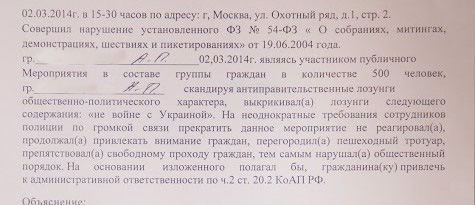

#
Резюме
В докладе рассматривается правоприменение статьи 20.2 КоАП в России с начала 2009 по 2014 год в статистическом измерении, а на примере дел, заведенных в Москве по итогам массовых задержаний в феврале-марте 2014 года, — в качественном: отслеживаются этапы судебного процесса, с которыми могут столкнуться участники митингов и акций. В то же время проблемы, напрямую связанные с использованием «антимитинговой» статьи, — например, сложности с согласованием акций или нарушения при задержании со стороны полиции, — насколько это возможно, оставлены за скобками исследования.
В результате исследования можно выделить следующие основные особенности правоприменения статьи 20.2 КоАП:
В 2014 году в суды по всей России поступило 2518 дел о нарушениях на публичных мероприятиях, за 2013 год — 2506 дел.
На долю московских судов пришлось две трети дел о нарушениях на митингах, рассмотренных в России в 2014 году и треть из рассмотренных в 2013 году. Для Москвы характерна большая доля обвинительных решений, но одновременно — более низкие штрафы, чем в других регионах страны.
В первой половине 2014 года доля обвинительных решений по делам о нарушениях на митингах достигла в Москве максимума за пять лет в 90% — при 14% в Санкт-Петербурге и 51% в целом по остальным регионам. Подавляющее большинство обжалуемых решений остается без изменений.
Отмечено большое количество переквалификаций с одной части статьи 20.2 КоАП на другую (зафиксировано в 40% рассмотренных дел), что свидетельствует о недостаточной компетенции полиции и запутанности для правоприменителя статьи 20.2 КоАП, которая стала с лета 2014 года еще сложнее.
Присутствие на заседании заинтересованной публики, свидетелей и даже самого задержанного и его защитника часто оказывается затруднено, последних нередко даже не предупреждают заранее о времени и месте заседания.
Суд полностью опирается на документы, составленные полицией, и критически относится к противоречащим им показаниям подсудимых и свидетелей защиты. Суды часто отказываются вызвать свидетелей, даже если они в этот момент находятся в здании суда, а также пригласить для дачи показаний сотрудников полиции, проводивших задержание.
Судя по рассмотренным случаям, ошибки в полицейских протоколах и решениях судов, присутствие обвиняемого в суде, большое количество свидетельств в его пользу хотя и не гарантируют, что дело будет выиграно, однако увеличивают такую вероятность.
Многие задержанные на московских массовых акциях в начале 2014 года старались доказать, что не участвовали в мероприятии. Между тем такая стратегия как правило не является выигрышной в российских судах и одновременно лишает задержанного возможности обжаловать нарушение своего права на свободу собраний в ЕСПЧ.
Источниками для исследования послужили материалы административных дел, собранные в рамках коалиционного проекта по юридической помощи задержанным на массовых акциях в начале 2014 года, интервью с задержанными и юристами, а также количественные данные Судебного департамента Верховного суда и тексты постановлений, опубликованные на сайтах московских районных судов и Мосгорсуда. В цитатах, приведенных в докладе, сохранены орфография и пунктуация исходных текстов. Цитаты на неопубликованные материалы приводятся без ссылок. Цитаты из материалов дел и текстов судебных решений приводятся без указания фамилий задержанных.
Хотя предметом настоящего исследования является рассмотрение дел по статье 20.2 КоАП в Москве, они рассматриваются в контексте общих тенденций по всей России на основании статистических данных Судебного департамента ВС. За вторую половину 2014 года сведения, предоставленные Судебным департаментом, включают в себя также дела о нарушении на митингах, рассмотренные в Крыму и Севастополе.
#
Предисловие
Предмет настоящего исследования — статья 20.2 КоАП, а вернее — судебная практика по этой статье. Это словосочетание — 20.2 КоАП — хорошо известно тем, кто следит за общественно-политической ситуацией в России: именно обвинение по статье 20.2 административного кодекса (нарушение установленного порядка организации либо проведения собрания, митинга, демонстрации, шествия или пикетирования) — остается самым распространенным — хотя и не единственным — методом административного преследования1 участников публичных акций. Именно по этой статье на них обычно составляют протоколы в ОВД, а через отделы полиции в Москве за последние четыре года прошло более 8000 участников протестных акций.
Последние годы эта статья постоянно ужесточалась: в 2012 и 2014 году в нее были внесены существенные изменения. Максимальный возможный штраф для рядового участника увеличился с одной тысячи рублей сначала до тридцати, а затем — до трехсот тысяч рублей. Кроме штрафов с 2012 года как вид наказания появились обязательные работы.
С июля 2014 года эта статья уже предполагает административный арест сроком до 20 суток (раньше арест до 15 суток предусматривался только за проведение несогласованных акций рядом с ядерными объектами), а также добавлено наказание за второе нарушение на митинге за год (штраф от 150 до 300 тысяч рублей или арест до 30 суток).
Кроме того, в результате последнего изменения законодательства о митингах с июля 2014 года нарушение по этой статье при наличии трех судебных постановалений по ней, полученных в течение полугода, становится основанием для уголовного наказания по новой статье 212.1 УК (максимальное наказание — пять лет лишения свободы).
| статья | часть | штраф (тыс. руб.) | обязательные работы (максимальное количество часов) | арест (максимальное число суток) |
| 19. 3 КоАП |
ч.1
|
0,5 - 1 | - | 15 |
|
ч. 4
|
0,5 - 1 | - | 15 | |
|
ч. 5
|
0,5 - 1 | - | 15 | |
|
ч. 6
|
5 | - | 30 | |
| 20.2 КоАП |
ч. 1
|
10 - 20 | 40 | - |
|
ч. 2
|
20 - 30 | 50 | 10 | |
|
ч. 3 *
|
30 - 50 | 100 | 15 | |
|
ч. 4
|
100 - 300 | 200 | 20 | |
|
ч. 5
|
10 - 20 | 40 | - | |
|
ч. 6
|
150 - 300 | 200 | 15 | |
|
ч. 6.1
|
10 - 20 | 100 | 15 | |
|
ч. 7
|
150 - 300 | - | 15 | |
|
ч. 8
|
150 - 300 | 40 - 200 | 30 | |
|
212.1 УК
|
600 - 1000 | 480 | 5 лет | |
| 20.2.2 КоАП |
ч. 1
|
10 - 20 | 100 | 15 |
|
ч. 2
|
150 - 300 | 200 | 20 | |
|
ч. 3
|
150 - 300 | 200 | 20 | |
|
ч. 4
|
150 - 300 | 200 | 30 |
Синим выделены изменения, вступившие в силу с новым законом. Наведите на заголовок части любой статьи, чтобы увидеть ее текстовую формулировку. (*) - текстовая формулировка изменена
Статья о нарушениях на публичных мероприятиях менялась не просто так: в 2012 году законодатели ужесточили ее после полугодового всплеска протестной активности, закончившегося жестким разгоном демонстрантов на Болотной площади и резонансным политическим уголовным делом. Предлагая весной 2014 года в очередной раз увеличить наказания по статье 20.2 КоАП и ввести санкции за «повторные» и «неоднократные» нарушения на митингах, депутаты ссылались на массовые задержания участников февральских акций в Москве, посвященных приговору по «Болотному делу». Авторы пояснительной записки к законопроекту2 к законопроекту, позже одобренного Госдумой, подчеркивали, что из 681 задержанного 24 февраля на Манежной площади и у здания Замоскворецкого суда (ОВД-Инфо известно о 664 задержаниях) ранее к административной ответственности по статье 20.2 КоАП были привлечены 49 человек, и утверждали, что ужесточение наказания является необходимой «профилактической мерой» для «защиты прав и свобод граждан от действий, вызванных несанкционированными собраниями, митингами, демонстрациями, шествиями или пикетированиями».
По данным ОВД-Инфо, 21 и 24 февраля в Москве были задержаны не менее 882 сторонников обвиняемых по «Болотному делу», включая тех, кто пришел в суд на оглашение приговора, но не смог попасть в здание: несмотря на то, что формально процесс был открытым, полиция огородила Замоскворецкий суд и пропускала внутрь только родственников и защитников обвиняемых, а также журналистов. Некоторых задержанных отпустили из ОВД без составления протокола, на других завели административные дела по статьям 20.2 и 19.3 КоАП (неповиновение законному распоряжению сотрудника полиции).
«В целях недопущения нарушений общественного порядка и общественной безопасности сотрудниками ГУ МВД России по г. Москве проведен комплекс мероприятий, по результатам которых в территориальные отделы МВД России по г. Москве доставлены наиболее активные участники несогласованных акций, — отчитывался по итогам двух дней замначальника московской полиции Вячеслов Козлов3. — За нарушение норм действующего федерального законодательства к административной ответственности привлечено 637 граждан».
Массовые задержания возобновились в Москве 2 марта, когда на акциях против решения Совета Федерации, накануне разрешившего вводить войска на территорию Украины, были задержаны, по данным ОВД-Инфо, более 360 человек.
Через несколько дней была создана коалиция по оказанию юридической помощи задержанным 21 и 24 февраля и 2 марта4. Через вошедших в коалицию юристов правозащитного центра «Мемориал», фонда «Общественный вердикт» и АНО ЮРИКС (Юристы за конституционные права и свободы) и подготовленных ими защитников прошло более 120 дел, в том числе не менее ста — по статье 20.2 КоАП. Не менее 90 обвинительных решений, вынесенных районными судами, были обжалованы в Мосгорсуде. К концу 2014 года жалобы 32 задержанных на нарушение права на свободу собраний и справедливое судебное разбирательство были направлены в Европейский суд по правам человека.
По приблизительной оценке, основанной на анализе данных ОВД-Инфо, около половины задержанных 21-24 февраля были задержаны на политических акциях впервые с декабря 2011 года5. Еще больше людей впервые столкнулись с обвинениями в административных правонарушениях на митингах: по данным из упоминавшейся выше пояснительной записки, среди задержанных 24 февраля только 7% ранее уже признавались виновными по статье 20.2 КоАП. Таким образом, следствием массовых задержаний в феврале-марте 2014 года стало появление большого числа очевидцев, впервые столкнувшихся с задержаниями на уличных акциях и с российскими судами, — свидетелей, способных оценить полицию и судебную систему свежим взглядом и готовых рассказать о своем опыте.
Появление такого уникального источника — большого количества людей, прошедших через задержания, содержание в отделе полиции и последующие судебные слушания с серьезной юридической подготовкой к ним — позволяет провести исследование правоприменительной практики по статье 20.2 КоАП. А непрекращающиеся задержания на публичных мероприятиях, тем более в новых условиях, когда каждое обвинительное постановление по «антимитинговой» статье чревато серьезным наказанием и становится потенциальным основанием для уголовного дела, делают такое исследование остро актуальным.
#
20.2 КоАП: статистика применения
#
Количество дел и их распределение по России
Ежегодно российские суды рассматривают тысячи дел о нарушениях на публичных мероприятиях. По данным Судебного департамента Верховного суда РФ, за 2013 год в суды поступило 2506 дел по 20.2 КоАП, за 2014 — 2410 (или 2518 при учете дел, рассмотренных в Крыму и Севастополе), из которых 1757 (около 70%) пришлись на первое полугодие.
После пика конца 2011 — первой половины 2012 года, когда на фоне роста протестной активности резко участились и случаи административного преследования участников уличных акций, и многократного увеличения размера штрафов в середине 2012 года количество рассматриваемых на всей территории России дел по статье 20.2 КоАП возвращается к уровню 2009 года.
Результаты рассмотрения дел по статье 20.2 КоАП (Россия, 2009 — 2014 год)*
Судебный департамент предоставляет данные о количестве дел, поступивших в суды пор конкретной статье, количестве рассмотренных дел и результатах рассмотрения: суд может вернуть материалы дела обратно в ОВД для устранения недостатков в протоколах, перевести их по подведомственности или подсудности, прекратить дело или вынести обвинительное решение. Если человек признан виновным, суд может ограничиться письменным предупреждением или вынести решение о штрафе, обязательных работах или административном аресте - эта информация также учитывается Верховным судом.
Если судить только по обобщенной статистике (которая, разумеется, не учитывает ни обстоятельств рассматриваемых дел, ни качества их рассмотрения), автоматически распространять представление об обвинительном уклоне российских судов на административные дела о нарушениях на митингах было бы явным преувеличением. С 2009 по 2013 год доля обвинительных решений по статье 20.2 КоАП колебалась от года к году от 50% до 60%, а во втором полугодии 2009 года опускалась до уровня в 42%. Доля обвинительных решений по всем статьям КоАП составляла в то же время 81-85%. При этом суды не только гораздо чаще возвращали дела по статье 20.2 КоАП обратно в ОВД для устранения ошибок (17-29% по сравнению с 3-5% в целом для остальных статей), но также чаще окончательно прекращали дела (10-16% по сравнению с общими 5-10%).
Сравнение судебных решений по статье 20.2 КоАП и по всем административным делам (Россия, 2009 - 2014 год)*
Средний размер штрафа по статье 20.2 КоАП по России, составлявший до изменения законодательства о митингах летом 2012 года 700-800 рублей, со второго полугодия 2012 года увеличился до 8-12 тысяч рублей. Однако даже после ужесточения наказания средний штраф за нарушения на митингах оказывается в несколько раз меньше, чем по делам, рассматриваемых судами по всем административным статьям вместе взятым. Дело не только в том, что в то же время штрафы росли и по другим статьям: средний административный штраф в целом вырос за шесть лет с 2009 по 2014 год в два с половиной раза (с 9,5 до 23,6 тысяч рублей). Такое формальное сопоставление само по себе обманчиво: размер среднего штрафа по всем статьям КоАП учитывает наказания не только для физических, но также для должностных и юридических лиц — по закону, на порядок (а иногда и несколько порядков) более строгие. Показательным является, однако, медианный штраф: в 2011 году штрафы в среднем более низкие, чем по статье 20.2 КоАП, получили всего 27% из всех оштрафованных судами по административным статьям, а в 2013 году, на следующий год после внесения поправок, - уже 63%.
Сравнение штрафов по статье 20.2 КоАП со всеми административными штрафами*
Рассмотренные российкими судами дела по статье 20.2 КоАП распределяются между десятками областей и городов. Большая их часть приходится на Москву (33% в 2013 году, 57% в 2014 году) и Санкт-Петербург (соответственно 17% и 13%). Сравнительно большое количество дел о нарушениях на митингах характерно также для Дагестана и Татарстана (в 2013 году в них было рассмотрено 5 и 4% от всех дел), а с 2014 года - и для Республики Крым (4%).
По наблюдениям ОВД-Инфо, в различных городах складываются собственные практики местных властей, полиции и судов по отношению к участникам публичных мероприятий. Согласовывают ли митинги, используются ли превентивные меры, разгоняют ли мероприятия, какие административные статьи применяются к задержанным, как ведут себя суды — все это может значительно отличаться от одного региона к другому. В том, что касается судов, эти эмпирические наблюдения подтверждаются и данными судебной статистики.
Регионы с наибольшим количеством поступивших дел по статье 20.2 КоАП в 2013 и 2014 году*
#
20.2 КоАП в московских судах: тенденции и особенности
Больше всего дел по статье 20.2 КоАП и раньше приходилась на Москву, но в первой половине 2014 года доля столицы составила рекордные две трети всех рассмотренных дел по этой статье (1106 из 1748). По данным ОВД-Инфо, только за первый квартал 2014 года в Москве были задержаны 1598 участников столичных акций6. Пик задержаний пришелся на конец февраля — начало марта 2014 года: на дни вынесения приговора по «Болотному делу» 21 и 24 февраля у здания Замоскорецкого суда и на Манежной площади, на акцию 1 марта на Манежной площади в связи с решением суда о домашнем аресте создателя Фонда борьбы с коррупцией Алексея Навального, а также выступления противников присоединения Крыма к России и ввода войск на территорию Украины у здания министерства обороны 2 марта. Аналогичные акции проходили в то же время и в Санкт-Петербурге, где, по данным ОВД-Инфо, в январе-марте 2014 года были задержаны по меньшей мере 192 человека. В других российских регионах в это время количество задержаний, напротив, сократилось почти до нуля: единичные зафиксированные случаи политических задержаний связаны с проходившей в начале года эстафетой Олимпийского огня.
Массовые задержания февраля-марта 2014 года повлекли за собой резкий рост количества дел в столичных судах. Если с начала 2009 до середины 2014 года количество дел о нарушениях на митингах составляло в Москве в среднем около 750 за полгода, достигая максимума в первом полугодии 2012 года (1651 дел) и минимума (304 дела) — в первом полугодии 2013 года, то с января по конец июня 2014 года московские судьи рассмотрели 1106 дел (всего за это время их поступило 1083).
Доля обвинительных судебных решений, с начала 2009 года колебавшаяся в Москве на уровне 23-78%, в первом полугодии 2014 года составила максимальные 90%. Происходит это частично за счет сокращения доли оправдательных постановлений (0,8% при в среднем 4% за предыдущие пять лет), но прежде всего благодаря резкому сокращению доли дел, возвращаемых судами в ОВД для устранения ошибок в протоколах (за первые шесть месяцев 2014 года было возвращено всего 6,9% из рассмотренных дел, тогда как ранее от полугодия к полугодию суды отправляли на доработку материалы 14-72% дел).
Официальные судебные данные показывают, что московские суды выносят решения не в пользу участников акций намного охотнее, чем региональные. В 2013 году доля обвинительных судебных решений составила в столице 76% при всего 28% в Санкт-Петербурге и 49% — в других регионах. В первой половине 2014 года это различие становится еще более явным: в Москве были признаны виновными 90% обвиняемых в нарушениях на митингах, в Санкт-Петербурге — 14%, в остальных регионах — 51%.
C другой стороны, если наказание все же избирается, размер штрафов в среднем оказывается в столице ниже, чем в других субъектах Российской Федерации. В 2013 году средний штраф в Москве составил немногим более семи тысяч рублей, в Санкт-Петербурге — чуть более одиннадцати, а в остальных регионах — почти двенадцать тысяч рублей. Это свидетельствует о том, что московские судьи следовали рекомендации Конституционного суда о назначении штрафов по статье 20.2 КоАП ниже минимального уровня в десять тысяч рублей. В начале 2014 года этот разрыв сокращается: если в Санкт-Петербурге размер штрафа даже несколько уменьшается, а в остальных регионах остается на прежнем уровне, то в Москве он увеличивается на 40% и составляет уже более 10 тысяч рублей.
Средний штраф по статье 20.2 КоАП увеличился в Москве с первой половины 2009 года почти в 20 раз. В общей сложности по рассмотренным в первом полугодии 2014 года делам столичные суды наложили более 10 миллионов рублей штрафов. За все предшествующие пять лет сумма штрафов составила 11,4 миллиона рублей.
Результаты рассмотрения дел по статье 20.2 КоАП (Москва, 2009 — 2014 год)*
По всей видимости, в большинстве случаев решения московских районных судов остаются неизменными и после обжалования. Хотя Судебный департамент ВС не предоставляет открытой статистики рассмотрения жалоб на постановления по административным делам, такое предположение можно сделать, опираясь на данные, обнародуемые Мосгорсудом. К концу 2014 года на его сайте были опубликованы сведения о 323 жалобах на обвинительные решения по статье 20.2 КоАП, рассмотренных с начала года7. Из них 249 обжалуемых решений (77%) были оставлены без изменений. В 10% случаев постановление было изменено (что само по себе не означает улучшения положения привлекаемого: по закону изменения, назначенные при рассмотрении дела во второй инстанции, не должны усиливать наказание, однако в данную статистику часто попадают формальные исправления, не меняющие сути постановления районного суда). Еще 10% обвинительных решений были отменены, а соответствующие дела либо прекращены (2%), либо отправлены на новое рассмотрение (8%).
Результат обжалования решений по статье 20.2 КоАП (Москва, 2014 год)*
Жалобы подавались по делам о нарушениях частей 1, 2, 3 и 5 статьи 20.2, причем преимущественно (84%) по последней, предполагающей наказание именно для участников акций.
Обжалование решений по разным частям статьи 20.2 КоАП (Москва, 2014 год)*
#
Рассмотрение дел задержанных в феврале-марте 2014 года
Юристы ПЦ «Мемориал», фонда «Общественный вердикт», АНО Юрикс и подготовленные ими защитники вели более 120 дел, заведенных на задержанных в Москве 21 и 24 февраля и 2 марта 2014 года, в том числе не менее ста дел — по статье 20.2 КоАП.
Из этих ста дел о нарушениях на митингах, рассмотренных в московских судах, три дела были прекращены, а материалы еще двух — возвращены в ОВД8. Остальные 95 задержанных были признаны виновными. При рассмотрении 42 из этих дел районные суды переквалифицировали обвинение со второй части на более мягкую пятую, предполагающую ответственность не для организаторов, а для участников собрания.
Назначенные судом наказания известны по 81 делу. Это исключительно штрафы, размер которых по рассматриваемым делам колеблется от 3 до 20 тысяч рублей, а в среднем составляет 10340 рублей. В большинстве случаев (68 дел) суды выбирали штраф в 10 тысяч рублей: это минимальная сумма, предусмотренная статьей 20.2, однако Конституционный суд в 2013 году признал ее слишком высокой и разрешил судам назначать наказание ниже низшего предела9.
Сто дел рассматривали 19 судей. В зависимости от того, где произошло задержание, дела о нарушениях на акциях попадали в один из трех судов: Пресненский, Замоскворецкий или Тверской. Две трети дел рассматривал последний — именно в его подсудности находятся правонарушения на Манежной площади и Тверской улице. По всем 63 делам Тверской суд вынес обвинительные решения. 10 из них пришлись на долю судьи Алеси Ореховой, 9 дел рассмотрела Татьяна Неверова, по 8 — Александра Ковалевская и Денис Иванов. Рекордные 11 дел рассмотрела судья Людмила Москаленко из Замоскворецкого суда.
Судьи Тверского суда выбирали более жесткие наказания: средний размер штрафа здесь составил 10620 рублей (в Пресненском суде — 10000, в Замоскворецком — 9790). Последний отличился не только чуть более низкими штрафами: он оказался также единственным судом, выносившим редкие оправдательные решения. Решения о возвращении дел в полицию выносила только судья Ирина Зубова из Пресненского суда.
Результат обжалования решений по статье 20.2 КоАП (в рамках выборки)*
83 обвинительных решения по статье 20.2 КоАП были обжалованы в судах второй инстанции. Из них 71 (86%) Мосгорсуд оставил без изменений. В 5 случаях решение было принято в пользу задержанного: либо была сокращена сумма штрафа, либо дела возвращали в районный суд или окончательно прекращали.
К концу 2014 года в ЕСПЧ были поданы семь коллективных жалоб от лица 32 задержанных.
Движение дел по статье 20.2 КоАП (в рамках выборки)*
#
Ход судебного разбирательства
#
Вызов в суд
Обвиняемые в нарушении установленного порядка проведения митингов нередко сталкиваются с негативными чертами судебной системы еще до момента рассмотрения дела в суде.
Некоторые заседания назначаются в такой короткий срок, что у задержанных нет возможности подготовиться, изучить материалы дела и выстроить линию защиты и посоветоваться с адвокатом. Особенно остро это проявляется в тех случаях, когда полиция составляет протокол по статье, предусматривающей административный арест и задержанных оставляют в ОВД до самого суда (с лета 2014 года арест возможен и по статье 20.2 КоАП, а до того с этим сталкивались задержанные, обвиняемые в неподчинении полиции — по «арестной» статье 19.3 КоАП).
Люди, которых после задержания все же отпустили из отдела полиции, сталкиваются с проблемой другого рода: им не всегда удается попасть на рассмотрение собственного дела. Закон предписывает вызывать участников производства об административном правонарушении в суд заказным письмом или любым другим способом, который позволяет задокументировать факт извещения. Однако, отмечает юрист Татьяна Глушкова, именно в судах по итогам задержаний в феврале-марте 2014 года суды все чаще начинают признавать подписываемые в отделах полиции и формально не имеющие никакой юридической силы «обязательства о явке»11 равноценной заменой официальному вызову в суд. По ее словам, даже в тех случаях, когда в таком документе указываются конкретная дата и время явки, эта информация выписывается сотрудниками ОВД произвольно, без согласования с судами, из-за чего возникают новые проблемы: «в ОВД всем задержанным, сколько бы их ни было, выписывают обязательства о явке на одно и то же время, и когда они приходят, им говорят, что их дела будут рассмотрены в течение дня, после чего люди могут целый день просидеть в коридоре суда, не имея возможности даже самостоятельно сформировать очередь, потому что судья вызывает их по своему усмотрению»12.
Что касается официальных повесток, то они нередко не приходят вовсе, или же их доставляют уже после дня рассмотрения дела в суде.
В результате желающим принять участие в собственном судебном процессе приходится самостоятельно выяснять дату и время рассмотрения дела — кому-то удается дозвониться в суд, кто-то приходит в него заранее, чтобы изучить материалы дела и одновременно узнать, на какой день назначено заседание. По словам Татьяны Глушковой, «в идеале человек, желающий ознакомиться с материалами дела, должен прийти в канцелярию или к конкретному судье — обычно дела уже расписаны по судьям, — получить материалы, ознакомиться, сфотографировать, сделать выписки и уйти. Иногда все так и происходит. Иногда это сопровождается длительным ожиданием в коридоре — пришедшему объясняют, что судья занята и ознакомиться с документами пока нельзя. Иногда говорят, что ознакомиться с материалами можно будет только после назначения даты заседания — что, конечно, неправда»15.
Предоставление подобной недостоверной информации, по всей видимости, не является исключительным событием в московских судах. Не соответствовать действительности может и место и время заседание, указанное в извещении, поэтому получение повестки также не является гарантией того, что человеку удастся попасть на рассмотрение своего дела.
Описанный выше случай — далеко не исключительный. Дело одного из подзащитных Татьяны Глушковой должно было рассматриваться в 15:10 7 марта в Тверском суде. Однако на входе приставы, сославшись на устное распоряжение председателя суда, сообщили им, что суд в 14:00 закрылся. Когда им все же удалось войти в здание, обнаружилось, что суд работает, однако рассмотрение административных дел, назначенных на 10:00, еще не начиналось. «После 14:00 их всех перестали выпускать из суда, — рассказывает Глушкова. — Точнее, выпускать, конечно, выпускали, но говорили, что если они выйдут, то обратно уже не зайдут. Суд продолжал работать, судья Неверова рассматривала какое-то уголовное дело, а люди продолжали сидеть (а кое-кто — и лежать) в коридоре. Потом заседание по уголовному делу закончилось, последовала долгая пауза, и в итоге заседания по административным делам начались в 19:00». Часть людей к тому моменту ушли, не дождавшись начала рассмотрения своих дел. Похоже, отмечает Глушкова, они не смогут доказать, что провели в суде девять часов: «Время входа в суд фиксируется у приставов, но время выхода — нигде»17.
В некоторых случаях заседания физически невозможно посетить: рассмотрение двух административных дел одного задержанного может быть запланировано практически на одно и то же время.
Из Мосгорсуда «соизволили позвонить и предупредить о месте и времени начала слушаний, — рассказывает задержанный у Замоскворецкого суда. — Сказали, что дела будут рассматриваться 14 апреля с разницей в 10 минут (15:50 и 16:00) одним судьей в одном кабинете (415). Судью, правда, не назвали. Но какая мне разница? Каюсь, не ожидая подвоха, на сайте суда информацию перепроверять не стал. В результате, придя к положенному времени в Московский городской суд, с удивлением обнаружил, что дела рассматриваются с разницей в 10 минут в разных концах разных этажей разными судьями). Сюрприз! К тому же, в кабинете 415 участники процессов идут по очереди по делам назначенным на 15 часов, а в кабинете 348 — назначенные на 14 часов еще не прошли». В результате привлекаемый смог присутствовать на рассмотрении только одного дела, которое продолжалось два часа, и не попал на второе заседание.
Следствием всех этих, казалось бы, технических неточностей становятся серьезные помехи защите еще до начала судебного заседания. Дело не только в том, что привлекаемый не может заранее распланировать свой день: постоянные ошибки в расписании судбных заседаний и прямая дезиноформация приводят к тому, что на рассмотрение дел сложно попасть защитнику и свидетелям, что явным образом ограничивает возможности для защиты.
Нарушается и требование гласности: желающим посетить заседание оказывается сложнее это сделать при отсутствии точных данных о его месте и времени. Более того, если людям все же удается дождаться заседания, их могут все равно не пустить в зал без какого-либо законного основания.
«Ни о каком доступе публики в судебное заседание не могло быть и речи, — рассказывает об очередном дне в суде Татьяна Глушкова, — пристав запускал только человека, в отношении которого слушалось дело, и его защитника (при наличии такового), остальные люди не допускались».
Между тем важным следствием публичности и открытости судебного заседания, помимо прочего, является то, что это дисциплинирует самих судей, которые понимают, что находятся под контролем общественности, подчеркивает адвокат Сергей Голубок21. Игнорирование этих базовых принципов является грубым нарушением судебного процесса.
Наконец, сам привлекаемый рискует пропустить рассмотрение своего дела. Отсутствие возможности присутствовать на собственном процессе является прямым нарушением гарантированного Конституцией права на открытое и состязательное судебное разбирательство. Наличие привлекаемого в суде, естественно, не гарантирует того, что суд примет решение в его пользу, однако все те редкие судебные заседания по делам задержанных в феврале-марте 2014 года, все же окончившиеся оправданием, проходили с участием привлекаемых.
«Чтобы поменялась процедура, нужно, чтобы поменялся КоАП. Наши судьи руководствуются только КоАП. Вообще на решения Европейского суда наши судьи сейчас не реагируют должным образом», — отмечает юрист Фонда свободной информации Евгений Смирнов22. Однако в данном случае судьи игнорируют, наряду с положениями Конституции и требованиями международных соглашений, и Кодекс об административных правонарушениях, который не только предписывает должным образом вызывать в суд участников процесса, но также предусматривает возможность «привода» в суд привлекаемого к адмистративной ответственности, не явившегося на заседание без уважительной причины. Более того, КоАП безоговорочно запрещает рассматривать без привлекаемого дела, влекущие административный арест или обязательные работы, что напрямую касается дел по статье 20.2.
#
Доказательства виновности
Стандартной доказательной базой при рассмотрении дел по статье 20.2 КоАП в суде являются протокол об административном правонарушении, протокол о задержании и доставлении в отдел полиции, рапорты и объяснительные сотрудников полиции, а также сообщение из департамента безопасности Москвы об отсутствии уведомления о проведении акции. В некоторых случаях суду было достаточно протоколов о правонарушении и задержании и рапорта одного полицейского, чтобы признать факт нарушения доказанным.
Ниже перечислены наиболее распространенные аргументы защиты против типичной доказательной базы и встречные доводы судов. Список составлен по результатам анализа материалов дел, судебных постановлений, текстов жалоб во вторую инстанцию, а также личных историй задержанных в феврале — марте 2014 года.
#
Документы, составляемые полицией
Текст с описанием обстоятельств правонарушения часто представляет собой печатный бланк, в который от руки вписывается только имя задержанного. Нередко шаблон составлен таким образом, чтобы его можно было использовать независимо от пола «нарушителя»: в нем можно встретить, например, такие формы как «выкрикивал (а)» или «продолжал (а)». «Под копирку» пишутся и рапорты.

В ответ на жалобы на однотипные, не индивидуализированные документы Мосгорсуд подчеркивает, что нормы КоАП «не запрещают составлять протокол и иные процессуальные документы при использовании технических средств и на бланках установленного образца».
Обвиняемые отмечают, что рапорт часто подписывают полицейские, не участвовавшие в задержании. Рассказывает Дмитрий Нестеров, задержанный 24 февраля у Замоскворецкого суда:
«В реальности, — пишет один из задержанных 2 марта в жалобе, — я был задержан не полицейским-водителем, составившим рапорт о моем задержании, а неким сотрудником ОМОН, что может подтвердить свидетель моего задержания». «Довод жалобы о том, что протокол об административном правонарушении и административном задержании составлены лицами, не присутствующими на месте правонарушения, — отвечает на это Мосгорсуд, — не свидетельствует об отсутствии в действиях *** В.И состава административного правонарушения, <…> поскольку из совокупности собранных по делу доказательств следует, что *** В.И. участвовал в несогласованном публичном мероприятии».
Сторона защиты постоянно указывает на то, что в рапортах и объяснениях полицейских отсутствует подписанное предупреждение о даче заведомо ложных показаний, и требуют исключить такие документы из дела. В некоторых случаях Мосгорсуд исключает из дела письменные объяснения сотрудников полиции, однако на исход это не влияет: рапорт с теми же показаниями все равно считается достоверным доказательством, поскольку является служебным документом, «не требующим предварительного разъяснения».
Доверие суда к рапортам сохраняется, даже если они написаны одним почерком или же слово в слово повторяют текст протокола об административном правонарушении. «Не доверять рапорту сотрудника полиции оснований не имеется, поскольку изложенные в рапорте обстоятельства согласуются с изложенным в протоколе об административном правонарушении событием административного правонарушения», — отвечают суды на претензии защиты.
Задержанные и их защитники постоянно указывают на ошибки в документах. В ряде рассматриваемых дел не хватало необходимых подписей: это может быть подпись сотрудника полиции, от лица которого написано объяснение, подпись полицейского, составлявшего протокол, или подпись самого привлекаемого. Такие случаи Мосгорсуд тоже обходит стороной: «Довод жалобы на то, что в протоколе о доставлении лица отсутствует подпись лица составившего протокол и подпись доставленного лица признан судом несостоятельным. В ходе производства по делу *** А.П. были разъяснены его права, что объективно подтверждается его подписью в протоколе о задержании и в протоколе об административном правонарушении, копия протокола об административном правонарушении была вручена *** А.П., *** А.П. знакомился с материалами дела, давал объяснения в суде. А потому отсутствие в протоколе подписи доставляемого лица не является основанием для отмены постановления судьи, т.к. это не повлекло за собой нарушение права на защиту».
Формальный подход к составлению протоколов, которые позже ложатся в основу судебных постановлений, приводит к тому, что в их текстах содержатся чрезвычайно общие формулировки вроде «выкрикивал лозунги тематического содержания» или даже сведения, которые, по свидетельствам очевидцев, совершенно не соответствуют действительности. «При себе у меня не было никакой наглядной агитации (последнее подтверждается тем, что в материалах дела отсутствует документ об изъятии документов или материалов, которые могли бы быть признаны наглядной агитацией), — пишет один из задержанных в жалобе. — Напротив, в протоколе <...> об административном задержании прямо указано на то, что “произведен личный досмотр, досмотр вещей, находившихся у задержанного (задержанной) *** А.А., в результате которого, обнаружены и изъяты: не изымалось”. В то же время, на странице 13 дела содержится агитационный материал, который я впервые увидел при ознакомлении с материалами дела. Наличие этого материала в деле считаю заведомым подлогом. В деле (в том числе, в протоколах, рапортах, объяснениях, отсутствует какая бы то ни было информация о том, что такие материалы присутствовали и были изъяты». Районный суд выносит по делу обвинительное решение, Мосгорсуд оставляет его без изменений.
Обвинительные решения выносятся даже несмотря на очевидные нестыковки в документах. «В открытых источниках не содержится никакой информации об адресе “Манежная площадь, д. 1, стр. 1”, — подчеркивает задержанный, которому суд назначил наказание в виде штрафа. — Соответственно, я не мог быть задержан по несуществующему адресу».
Наряду с географическими феноменами широко распространены и временные. Не становится помехой для признания задержанного виновным факт задержания за сорок минут до предполагаемого нарушения закона. «Суд принимает во внимание тот факт, что в рапортах сотрудников полиции и протоколе об административном правонарушении указано время задержания Н., — 16.30ч., а в протоколе об административном задержании, — 17.10ч., — говорится в постановлении. — Однако, суд считает, что указанные противоречия не являются существенными, а неточность во времени является опечаткой, учитывая массовый характер публичного мероприятия; большое количество граждан, задержанных в ходе его проведения, а равно, принимая во внимание, что в каждом из вышеприведенных процессуальных документов, в том числе, и в объяснениях сотрудников полиции, описаны конкретные обстоятельства и событие правонарушения, которые полностью согласуются с иными доказательствами по делу, суд <...> не усматривает оснований для исключения объяснений сотрудников полиции из числа доказательств». Позже эту аргументацию поддерживает Мосгорсуд: «Довод жалобы, что процессуальные документы содержат противоречия, которые не позволяют установить предполагаемое время и место совершения вменяемого правонарушения был предметом оценки судьи районного суда, не согласиться с которым у суда при рассмотрении жалобы оснований не имеется».
«Согласно обжалуемому постановлению, а также протоколу об административном правонарушении <...> события, произошедшие на Манежной пл. г. Москвы и предположительно содержавшие в себе состав административного правонарушения, имели место в 17 ч. 20 мин. 2 марта 2014 г, — отмечает автор очередной жалобы. — Однако в соответствии с протоколом об административном задержании <...> я был доставлен в ОМВД по району Северное Измайлово г. Москвы в то же самое время, то есть в 17 ч. 20 мин. 2 марта 2014 г., что является невозможным, поскольку расстояние от Манежной пл. до ОМВД по району Северное Измайлово г. Москвы составляет 27 км.». Мосгорсуд отказывается удовлетворить эту жалобу, мотивируя это следующим образом: «Все сведения, необходимые для правильного разрешения дела, в протоколе отражены, событие правонарушения должным образом описано, составлен надлежащим должностным лицом, а потому данный протокол обоснованно признан в качестве допустимого доказательства по делу».
О том, как районные суды закрывают глаза на многочисленные нарушения со стороны полиции, рассказывает Алла Полунина, задержанная 2 марта у здания Минобороны и признанная виновной сразу по двум статьям — 20.2 и 19.3 КоАП:
«Суды рутинно нарушают требования состязательности, право обвиняемых допросить свидетелей, показывающих против них», — утверждает старший юрист Правозащитного центра «Мемориал» Кирилл Коротеев25. Действительно, среди ста анализируемых дел судьи крайне редко соглашались вызвать на заседание в качестве свидетелей или для поддержания обвинения сотрудников полиции, отказывая даже когда в подготовленных полицией документах обнаруживались явные ошибки и противоречия.
«Рассмотрев заявленное ходатайство, суд находит его подлежащим отклонению, поскольку в суд представлены материалы об административном правонарушении, в которых имеются пояснения узаказанных сотрудников полиции, которые предупреждены об ответственности», — аргументирует стандартный отказ судья Чепрасова Замоскворецкого районного суда. Судьи также отмечают, что КоАП «не предусматривает участия лиц, составивших протокол об административном правонарушении в качестве лица, поддерживающего обвинение» или же что «необходимость обязательного участия в рассмотрении дела должностного лица, составившего протокол об административном правонарушении, нормами КоАП РФ не оговаривается». Аналогичные доводы приводит при рассмотрении жалобы и Мосгорсуд.
Отсутствие при рассмотрении административного дела сотрудников полиции фактически перекладывает функцию обвинения на судью, что не совместимо с положениями о беспристрастном и независимом суде и требованием обеспечить принцип состязательности, настаивают защитники. «Беспристрастность суда недостижима, если на суд возлагается функция обвинения, — указывает Коротеев в ходатайствах, подкрепляя этот аргумент вынесенными ранее решениями Европейского суда по правам человека и российского Конституционного суда. — В отсутствие представителей обвинения функция его поддержания с необходимостью будет ложиться на суд, если только по этому основанию он не прекратит рассмотрение дела».
#
Сообщение о несогласованности
Ключевым пунктом обвинения в делах по статье 20.2 КоАП является несогласованность митинга, в которым якобы участвовал задержанный.
Между тем задержанные у Замоскворецкого суда во время вынесения приговора по «Болотному делу» утверждают, что пришли на открытое судебное заседания, и не собирались участвовать в акции. А москвичи, выступившие 2 марта против введения российских войск на территорию Украины и обвиненные в участии в несогласованном мероприятии, подчеркивают: акция не могла быть согласована заранее, поскольку стала стихийным ответом на решение Совета Федерации, узнать о котором заранее было невозможно.
«Как следует из содержащихся в материалах дела рапорта командира взвода ОБ ППСП УВД по ВАО ГУ МВД по г. Москве капитана полиции *** С.Н. и объяснений бойца 4-го ОБ ОМОН ЦСН ГУ МВД России по г. Москве старшины полиции *** С.Д. они, не будучи сотрудниками полиции, регулярно несущими службу в Центральном административном округе г. Москвы, производили мое задержание на Манежной пл. г. Москвы., — говорится в одной из жалоб. — Указанные обстоятельства свидетельствуют о том, что властям г. Москвы было заранее известно о том, что 2 марта 2014 г. на Манежной пл. г. Москвы будет проводиться публичное мероприятие. Более того, власти успели подготовиться к указанному публичному мероприятию, направив туда для несения службы сотрудников полиции из других районов Москвы, а также сотрудников ОМОН. Таким образом, несмотря на отсутствие формально поданного в орган исполнительной власти г. Москвы уведомления, в настоящем деле власти г. Москвы заранее знали о том, что 2 марта 2014 г. на Манежной площади будет проходить публичное мероприятие, и были подготовлены к нему. Вследствие этого признание меня виновным в совершении административного правонарушения из-за моего участия в мирном спонтанном собрании, к которому власти г. Москвы были фактически подготовлены, нарушает ст. 11 Конвенции».
Подавляющее большинство обвинительных протоколов были выписаны по пятой части статьи 20.2 КоАП, предусматривавшей наказание для участников за «нарушение установленного порядка проведения» митинга, что порождает споры о требованиях к участникам уличных акций. «Я обвиняюсь в том, что нарушил порядок проведения митинга, участником которого якобы являлся, тогда как в отсутствие согласования говорить об установленном порядке проведения митинга невозможно, а значит, нельзя говорить и о нарушении этого порядка, — пишет в жалобе один из задержанных. — Согласование митинга является обязанностью организатора. Более того, ФЗ “О митингах” не возлагает на участника обязанности искать организатора мероприятия и выяснять, является ли оно согласованным или нет». Тем не менее районные суды продолжают настаивать: «Действия (бездействие) участников публичного мероприятия, несогласованного с органами публичной власти, подлежат квалификации по ч. 5 ст. 20.2 КоАП РФ». «Довод жалобы о том, что *** А.П. не знал, что проводимое публичное мероприятие, не согласовано с органами исполнительной власти, основан на неверном толковании норм права, а потому не принят судом», — подытоживает Мосгорсуд.
Сторона защиты часто требует исключить из материалов дела документ об отсутствии согласования, если суд обращается за ним в московский Департамент региональной безопасности по собственной инициативе. Юристы ссылаются на нормы российского законодательства, отделяющие судебные функции разрешения дела от функции обвинения. Мосгорсуд раз за разом отказывает признать эти доводы, аргументируя это тем, что справка из мэрии дается по поручению председателя суда «в порядке подготовки дела к рассмотрению» и «содержит необходимые сведения для правильного разрешения дела».
#
Доказательства невиновности
Как видно из приведенных примеров, суды с большим доверием относятся к документам, подтверждающим вину задержанных. Иначе обстоит дело с показаниями привлекаемого и свидетелей защиты — они рассматриваются как недостоверные, поскольку противоречат материалам полиции.
Такой избирательно-критический подход сохраняется неизменным от одного заседания к другому, и его наглядно иллюстрируют официальные судебные постановления:
«В судебном заседании *** В.И. с протоколом об административном правонарушении не согласился, вину не признал, пояснил, что в митинге участия не принимал, лозунгов не выкрикивал, все происходящее снимал на камеру, хотя на Манежную площадь пришел выразить свою позицию по поводу введения российских войск на территорию Крыма. Также, *** указал на то, что его задержание проводилось незаконно, и длилось более шести часов, рапорты составлены лицами, которые не производили его задержание, с сотрудниками полиции *** ранее знакома не был. В протоколах и рапортах неправильно указано время задержания, поскольку фактически *** был задержан в 15ч.15мин. <...> Опрошенная по ходатайству стороны защиты в качестве свидетеля *** Е.А., пояснила, что 02.03.2014 года она также находилась на Манежной пл., где видела ранее незнакомого ей *** В.И. Свидетель пояснила, что фактическое задержание *** произошло в 15 час.20 мин. и что производилось оно с нарушениями, т.к. сотрудники полиции не представились, при этом, *** лозунгов не выкрикивал, плакатов не держал, вел себя спокойно. <...> Несмотря на занятую *** позицию, его вина в совершении правонарушения подтверждается исследованными в судебном заседании материалами административного дела. Пояснениям *** о его невиновности, суд не доверяет, находит их избранным способом защиты, поскольку они объективно ничем не подтверждены, и, напротив, опровергаются собранными по делу доказательствами — письменными материалами дела, в том числе, письменными объяснениями и рапортами сотрудников полиции, оснований не доверять которым суд не установил. Оценивая показания свидетеля ***, суд им также не доверяет, относится к ним критически, поскольку они опровергаются вышеприведенной совокупностью доказательств, признанных судом достоверными».
Это не исключительное событие, а общая практика московских судов: «Доводы *** Е.Г. и ее защитника о том, что она участие в митинге не принимала, лозунгов не выкрикивала, судья находит не подтвержденными, опровергающимися документально материалами дела»; «показания свидетеля *** А.Б. о том, что она 02 марта 2014 года прибыла на Манежную площадь с сестрой и другом с целью посещения Исторического музея, выйдя из торгового комплекса “Охотный ряд” они увидели большое скопление людей, в их числе сотрудников полиции, которые вынуждали граждан покинуть площадь, сопротивление сотрудникам полиции не оказывали, сделали все, чтобы быстрее покинуть место скопления людей, двинулись в сторону улицы Тверская, однако там сотрудниками полиции был задержан ***, судом не могут быть приняты во внимание, поскольку ее позиция не опровергает факт нахождения *** в месте проведения несогласованного публичного мероприятия, а кроме этого противоречат всей совокупности исследованных судом доказательств»; «опрошенные судом по ходатайству *** А.В. в качестве свидетелей *** Е.Г., *** В.Н. дали показания аналогичные по смыслу и содержанию пояснениям *** А.В. <…> Объяснения *** А.В. и его защитника суд расценивает как защитную позицию, избранную с целью избежать административной ответственности, что соответствует процессуальному положению *** А.В., как лица, в отношении которого ведется производство по делу об административном правонарушении, однако позволяет критически к ним относиться, доводы о том, что он участия в митинге не принимал, лозунгов не выкрикивал, опровергаются совокупностью исследованных в судебном заседании доказательств. В равной степени суд оценивает и показания допрошенных в судебном заседании в качестве свидетелей».
Такую позицию убежденно отстаивает и Мосгорсуд:
«Не доверять данным доказательствам оснований не имеется, поскольку изложенные в рапортах сотрудников полиции обстоятельства согласуются с изложенным в протоколе об административном правонарушении событием административного правонарушения».
«Доводы в жалобе на то, что, судом неполно и необъективно исследованы материалы дела, не состоятельны, поскольку совокупность исследованных судьей доказательств позволяет установить обстоятельства правонарушения и вину *** А.П. в совершении административного правонарушения, предусмотренного ч. 5 ст.20.2 КоАП РФ».
«Довод жалобы о том, что по делу имеются неустранимые сомнения, которые должны быть истолкованы в пользу ***В.И., не соответствует действительности, каких-либо неустранимых сомнений по делу не усматривается».
В таких условиях отходят на задний план регулярные жалобы защиты на отсутствие свидетельских показаний. «В протоколе не указаны свидетели (их ФИО, адреса места жительства), хотя, как следует из того же протокола, в районе Манежной площади, д. 1, стр. 1, где я якобы был задержан, было порядка 500 человек», — отмечает автор одной из жалоб.
Районные суды часто отказываются рассматривать видеозаписи и вызвать свидетелей задержания, даже если они в этот момент находятся в зале суда, приводя подобные объяснения: «Рассмотрев заявленное ходатайство, суд считает, что оно удовлетворению не подлежит, поскольку в материалах дела достаточно доказательств для рассмотрения дела по существу без вызова заявленных свидетелей». Хотя и при вызове свидетелей судья часто игнорирует их показания в пользу сведений из документов, составленных полицией, все же единственные три оправдательных решения среди рассматриваемых дел были вынесены в тех случаях, когда суд заслушивал показания свидетелей.
Безрезультатными нередко оказываются и требования задержанных и их защитников допросить в качестве свидетелей сотрудников полиции, составлявших протоколы, — судьба подобных ходатайств описана выше.
Между тем, согласно позиции Верховного суда РФ28, отказ в удовлетворении ходатайств защиты о вызове свидетелей и приобщении видеозаписей является прямым нарушением статей 24.1 и 26.1 КоАП, в которых перечислены задачи производства по делам об административных правонарушениях и обстоятельства, подлежащие выяснению по административному делу, и, следовательно, является основанием для отмены решения в порядке надзора.
Несмотря на то, что районные суды фактически не учитывают показания предполагаемого нарушителя, обвиняемые в нарушениях на митингах в феврале-марте 2014 года часто старались доказать — и в суде, и ранее в ОВД, — что оказались среди задержанных случайно.
«В митинге не участвовала, лозунги не кричала, плакаты не держала. На Манежной площади гуляла с друзьями»; «прогуливался по центру Москвы с девушкой, проходил по Манежной площади. Увидел столпотворение, подошел узнать, что там. На подходе спросил у сотрудника полиции, что происходит. Меня попросили пройти с сотрудником. Повели в автозак, возможно, из-за непонимания. Причину задержания не знаю»; «2 марта 2014 г. находилась на Манежной площади недалеко от входа в ТЦ “Охотный ряд”. Ждала друга, лозунгов не выкрикивала, в митинге не участвовала. Меня задержан мужчина в форме ОМОН, представился Игорем», — это типичные объяснения задержанных.
Между тем такой подход не только не дает преимущества в российских судах, заведомо предпочитающих сведения из полицейских протоколов и рапортов, но также сокращает возможности обжалования на международном уровне. Если человек подчеркивает, что случайно оказался в неудачном месте, а не вышел намеренно на улицу, чтобы отстаивать свои политические взгляды, он может рассчитывать на удовлетворение в ЕСПЧ жалобы на нарушение права на справедливое судебное разбирательство, но не права на свободу собраний.
#
Другие особенности процедуры
В отдельных случаях на заседаниях по делам задержанных на публичных мероприятиях в феврале-марте 2014 года судьи объединяли рассмотрение дел разных людей. Так, судья Людмила Москаленко Замоскворецкого суда в ответ на вопрос защитника о том, в какой последовательнсти будут слушатся дела, заявила: «У вас там одно в другое перетекает»30.
Между тем возможность рассматривать дела одновременно двух привлекаемых не предусмотрена административным кодексом.
В редких случаях, судьи зачитывали только резулятивную часть решения или даже вообще не провозглашали его на заседании. Так, по словам юриста Кирилла Коротеева, судья Замоскворецкого суда Наталья Чепрасова «вообще ничего не провозглашала в одном нашем деле — просто секретарша вынесла постановление и сказала “Распишитесь”»32.
При расмотрении дел по 20.2 КоАП не ведутся протоколы заседания, что в дальнейшем может помешать обжаловать процессуальные нарушения в Мосгорсуде. Не удовлетворяя ходатайство защиты о ведении протокола, суды как правило ссылаются на КоАП, который требует вести протокол, только если дело рассматривается коллегиально. Тем не менее российское законодательство не исключает такой возможности и для заседаний с одним судьей36. Однако «что не урегулировано, то судьи делают как можно проще для себя», отмечает юрист Фонда свободной информации Евгений Смирнов37. Игнорируют суды и решение Европейского суда по правам человека, который в 2013 году признал, что санкции, предусмотренные статьей 20.2 КоАП (даже когда она предусматривала еще штраф всего до двух тысяч рублей), по своей природе являются «наказательными» и «превентивными» и соответствуют уголовным, в связи с чем рассмотрение таких дел в суде должно соответствовать рассмотрению уголовного дела. Это в полной мере относится и к ведению протокола заседания.38
#
Что такое «успешное дело»
#
Оправдания в районных судах
Из сотни анализируемых дел о нарушениях на митингах начала 2014 года производство по трем было полностью прекращено, еще два дела были возвращены на доработку в ОВД, что фактически является завуалированной формой оправдания.
Суды возвращают дела в ОВД для устранения ошибок в собранных полицией документах. Так произошло и с делом Людмилы В. — одинокой матери несовершеннолетнего ребенка, инвалида второй группы, члена УИК с правом решающего голоса: из письменного объяснения сотрудника полиции, который, согласно документам, проводил задержание, следовало, что женщина, была задержана за действия постороннего человека: «Примерно в 14:00 часов мною была задержана гр-ка В. которая принимала участие в проведении несогласованного мероприятия в форме пикета, без согласования с органами исполнительной власти в группе лиц в количестве 100 человек. Р. выкрикивал лозунг “Нет войне!”, тем самым привлекая к себе внимание проходящих мимо граждан и средств массовой информации, — говорилось в документе. - Было очевидно, что данный гражданин прибыл совместно, в составе группы граждан для проведения несанкционированного мероприятия в форме митинга». Судья Ирина Зубова вернула дело обратно в Пресненский ОВД. Аналогичным образом были возвращены в ОВД «Войковский» материалы дела по статье 19.3 КоАП: в протоколе об административном правонарушении не было подписи составляющего.
Поводом для полного прекращения трех дел по 20.2 КоАП послужили фактические ошибки в протоколах. Рассмотрение всех трех дел проходило в присутствии привлекаемых и их защитников и сопровождалось вызовом в суд свидетелей по ходатайству защиты.
Так, в протоколе, составленном в отношении задержанной 24 февраля, были указаны неверное время задержания и несуществующий адрес.
В качестве дополнительных свидетельств были привлечены выписки из кадастра недвижимости и схемы расположения строения, подтверждающие, что здания по указанному в протоколе адресу не существует. В результате судья постановила, что «использование доказательств, полученных с нарушением закона, не допускается», и объявила факт правонарушения недоказанным.
Еще одно прекращенное дело было связано с событиями 21 февраля у Замоскворецкого суда. На заседании по своему делу задержанный подчеркнул, что не участвовал в акции, а пытался попасть на открытый судебный процесс. Выступивший в суде свидетель, в свою очередь, указал на то, что задержанный не держал плакатов и не выкрикивал лозунгов. Однако основанием для прекращения дела за отсутствием состава правонарушения стала пропущенная в протоколе подпись составлявшего его сотрудника полиции.41
#
Штрафы ниже среднего
Пока законодатели не сократили размер штрафа по статье 20.2 КоАП, Конституционный суд разрешил судьям назначать штрафы ниже минимального уровня в 10 тысяч рублей, предусмотренного данной статьей. В рассматриваемых в данном докладе делах московские суды прибегают к возможности смягчить наказание только в четырех случаях, три раза снизив штраф до пяти и один раз — до трех тысяч рублей.
Минимальный штраф, три тысячи рублей, получил В., задержанный 2 марта на Манежной площади. Он пришел на заседание и настаивал на том, что не участвовал в митинге, а гулял по Манежной площади с друзьями. Суд выслушал также показания свидетельницы защиты, но счел что «вина в совершении правонарушения подтверждается исследованными в судебном заседании доказательствами»: протоколами о задержании и об административном правонарушении и рапортом сотрудника полиции. Любопытно, что в деле не упоминается справка из мэрии, подтверждающая, что мероприятие не было согласовано. Тем не менее в постановлении суда говорится, что факт участия задержан в несогласованной акции доказан. Почему при этом назначен сравнительно низкий штраф, в документе не поясняется.
«Все было очень спокойно и даже дружелюбно, — прокомментировал решение суда защитник Кирилл Жаринов. — Заседание длилось минут 30-40. Я предлагал ему [привлекаемому — ОВД-Инфо] вызвать свидетелей полицейских, так как в протоколе и рапорте противоречия о времени задержания и существе действий В. <...> и заявить еще некоторые ходатайства, но В. не захотел, так как казалось, что все и так неплохо шло (по сравнению с предыдущими двумя делами, где люди вообще никак не защищались, считая, что это бесполезно, и получили в итоге по 10 тысяч штрафа). И В. решил не раздражать судью новыми ходатайствами, который уже и так явно устал слушать предыдущие. Может, это было и правильным решением».
Рекордно низкий штраф в одну тысячу рублей получила одна из задержанных 4 марта у Министерства обороны — женщина защищалась самостоятельно, и потому это дело не учитывалось в выборке коалиционного проекта.
#
Изменения в Мосгорсуде
5 из 83 жалоб на решения по статье 20.2 в результате улучшили положение привлекаемых.
Два обвинительных решения были отменены и возвращены на новое рассмотрение. В одном случае это было связано с тем, что задержанная не смогла присутствовать на судебном заседании: «Согласно представленным материалам, — говорится в постановлении Мосгорсуда, — о месте и времени рассмотрения дела, назначенного на 21 марта 2014 года в 11 часов 30 минут в зале № 133 Тверского районного суда г. Москвы, ***а К.Л. была извещена надлежащим образом — телеграммой <...>. В здание Тверского районного суда г. Москвы заявитель явилась 21 марта 2014 года в 10 часов 58 минут на рассмотрение дела в зал судебных заседаний № 133, что подтверждается копией Журнала учёта посетителей. Вместе с тем, несмотря на указанные обстоятельства, судья районного суда рассмотрел дело в отсутствие ***ой К.Л., не обеспечив тем самым процессуальные гарантии прав лица, в отношении которого ведётся производство по делу об административном правонарушении <...>, что повлекло нарушение его права на судебную защиту».
Второе дело было возвращено в районный суд на новое рассмотрение из-за того, что обвиняемая в нарушении на митинге являлась членом УИК с правом решающего голоса и по закону ей не могли назначить административный штраф без согласия прокурора Москвы.
Еще в одном случае обжалование позволило сократить штраф с десяти до пяти тысяч: Мосгорсуд учел рекомендацию Конституционного суда. В жалобе защитник подчеркивал, что штраф наложен на неработающего пенсионера и составляет размер его ежемесячной пенсии.
Наконец, два обвинительных решения были полностью отменены, а дела по ним закрыты. В частности, был отменен 10-тысячный штраф одной из задержанных на Манежной площади, которая утверждала, что во время задержания просто стояла с подругой у метро. Мосгорсуд выслушал показания свидетельницы, которую Пресненский районный суд, вынося решение, отказался допросить, и счел, что «судом не установлено, в чем выразились противоправные действия ***»: «Ни из содержания протокола об административном правонарушении, ни из иных материалов дела не ясно, какие именно противоправные действия *** К.О. совершила и в чем конкретно выразилось ее участие в митинге. В протоколе об административном правонарушении, иных материалах дела отсутствуют ссылки на нарушения *** К.О. конкретных норм Закона о собраниях, митингах, демонстрациях, шествиях и пикетированиях».
Таким образом, в редких случаях нарушения, допущенные при составлении протокола полицией или при рассмотрении дела в районном суде, все же становятся основанием для отмены или корректировки обвинительного решения.
#
Заключение
Правоприменительная практика по статье 20.2 КоАП в московских судах, как показывают данные официальной статистики, разительно отличается от региональной. Москва — столица протестов: здесь рассматривается значительно больше дел о нарушениях на митингах, чем в любом другом регионе. Вместе с тем для столичных судов характерна и существенно более высокая доля обвинительных решений.
Проанализированные данные сами по себе не объясняют такое специфическое лидерство Москвы. Однако можно предположить, что причиной его является, с одной стороны, ее особый статус, а с другой стороны, регулярный характер московских протестов.
В Москве и полиция, и суды, и сами протестущие находятся в непосредственной близости к федеральной власти. Из этого, в частности, следует и то, что московские протесты в значительно большей степени направлены против федеральной, а не местной власти, и дела московских задержанных носят значительно более политизированный характер. А от тематики протеста может зависеть как личное отношение судьи к рассматриваемым делам и их участникам, так и степень заинтересованности исполнительной власти во влиянии на суды.
Влияние на правоприменительную практику, вероятно, оказывает и количество рассматриваемых дел как таковое. Регулярность задержаний участников публичных мероприятий, не всегда многочисленных, но происходящих в Москве постоянно, позволяет полиции и судьям накапливать опыт по составлению протоколов по статье 20.2 КоАП и рассмотрению соответствующих дел. О том, что в столичных судах подобные дела поставлены на поток, свидетельствет как статистика, так и качественные данные, раскрывающие, как именно проходят судебные разбирательства.
Такие источники, как рассказы подсудимых, комментарии их защитников и собственно тексты судебных решений различных инстанций, показывают, что дела о нарушениях на митингах рассматриваются в Москве крайне оперативно. Присутствие на заседании защитников, свидетелей, а порой и самого «правонарушителя» часто оказывается затруднено. Если же им все же удается попасть на судебное разбирательство, то их доводы практически никогда не признаются судом заслуживающими доверия: в основу судебных решений ложатся протоколы об административном правонарушении, доставлении, задержании, рапорты сотрудников полиции.
Особенность административных дел в целом заключается, наряду со сжатыми сроками рассмотрения, также в сравнительно меньших рисках для предполагаемых нарушителей, — а следовательно, и в меньшем грузе ответственности, ложащемся на судью при принятии решения. В случае же массовых задержаний, потока однотипных дел и большей нагрузки на судей эти черты проявляются тем более остро, приводя к менее внимательному рассмотрению дел, отсутствию индивидуального подхода, штамповке решений и, как следствие, к увеличению количества обвинительных решений.
Таким образом, можно предположить, что специфические решения по делам задержанных в Москве на уличных акциях в феврале-марте 2014 года объясняются, во-первых, острой политизированностью самих акций (задержания происходили на мероприятиях, посвященных протесту против приговора по «Болотному делу», а затем — ввода войск в Украину), а во-вторых, — массовому характеру задержаний: в течение двух недель на акциях были задержны более 1300 человек, и сотни административных дел по этим задержаниям были рассмотрены в нескольких районных судах всего за месяц.
Впрочем, один только факт массовых задержаний еще не объясняет рекордно высокий уровень обвинительных решений. Еще больше дел по статье 20.2 КоАП прошло через московские суды на фоне массовых протестов 2011-2012 годов, однако тогда обвинительные решения выносились значительно реже, чем два года спустя. 2014 год отличается от 2011-2012 годов не только более жестким правоприменением статьи 20.2 КоАП: с тех пор сменился президент, риторика Кремля, законодательство о публичных мероприятиях, а также лозунги и тактика протестующих. К сожалению, все перечисленное изменилось в сторону ужесточения. Правоприменение статьи о нарушениях на митингах представляется точным индикатором, отражающим изменения в общественно-политической жизни страны.
оглавление
 комментарии
комментарии
 ссылки
о докладе
ссылки
о докладе
комментарии
ссылки
о докладе
Часть 3 статьи 25.1 КоАП. При рассмотрении дела об административном правонарушении, влекущем административный арест, административное выдворение за пределы Российской Федерации иностранного гражданина либо лица без гражданства или обязательные работы, присутствие лица, в отношении которого ведется производство по делу, является обязательным.
Статья 24.1 КоАП. Задачи производства по делам об административных правонарушениях
Задачами производства по делам об административных правонарушениях являются всестороннее, полное, объективное и своевременное выяснение обстоятельств каждого дела, разрешение его в соответствии с законом, обеспечение исполнения вынесенного постановления, а также выявление причин и условий, способствовавших совершению административных правонарушений.
Часть 1 статьи 25.15 КоАП. Извещение лиц, участвующих в производстве по делу об административном правонарушении
Лица, участвующие в производстве по делу об административном правонарушении, а также свидетели, эксперты, специалисты и переводчики извещаются или вызываются в суд, орган или к должностному лицу, в производстве которых находится дело, заказным письмом с уведомлением о вручении, повесткой с уведомлением о вручении, телефонограммой или телеграммой, по факсимильной связи либо с использованием иных средств связи и доставки, обеспечивающих фиксирование извещения или вызова и его вручение адресату.
дело Киприану против Кипра, Постановление от 27 января 2004 г., жалоба № 73793/01; Менешева против России, Постановление от 9 марта 2006 г., жалоба № 59261/00; Озеров против России, решение от 18 мая 2010 года, жалоба No 64962/01, Малофеева против России, решение от 30 мая 2013 года, жалоба No 36673/04, п. 117; Постановление Конституционного суда РФ от 28 ноября 1996 г. №
19-П.
Статья 26.1 КоАП. Обстоятельства, подлежащие выяснению по делу об административном правонарушении
По делу об административном правонарушении выяснению подлежат:
1) наличие события административного правонарушения;
2) лицо, совершившее противоправные действия (бездействие), за которые настоящим Кодексом или законом субъекта Российской Федерации предусмотрена административная ответственность;
3) виновность лица в совершении административного правонарушения;
4) обстоятельства, смягчающие административную ответственность, и обстоятельства, отягчающие административную ответственность;
5) характер и размер ущерба, причиненного административным правонарушением;
6) обстоятельства, исключающие производство по делу об административном правонарушении;
7) иные обстоятельства, имеющие значение для правильного разрешения дела, а также причины и условия совершения административного правонарушения.
Статья 29.8 КоАП. Протокол о рассмотрении дела об административном правонарушении
1. Протокол о рассмотрении дела об административном правонарушении составляется при рассмотрении дела коллегиальным органом.
ОВД-Инфо, 06.03.2014
Протест на тормозах: политические задержания в 2013 году. Годовой доклад ОВД-Инфо за 2013 год.
Московский городской суд
По данным юриста Максима Крупского, из дел о задержаниях 21 и 24 февраля были прекращены по меньшей мере семь.
По всей видимости, не все подобные дела попали в выборку ОВД-Инфо, однако итоговое распределение решений в целом соответствует описанной выше общей картине по статистике Судебного департамента за полгода в Москве.
ОВД-Инфо, 07.04.2014
Конституционный Суд Российской Федерации
ОВД-Инфо, 13.03.2014
ОВД-Инфо, 27.03.2014
ОВД-Инфо, 10.01.2015
ОВД-Инфо, 05.05.2014
ОВД-Инфо, 28.03.2014
ОВД-Инфо, 18.04.2014
ОВД-Инфо, 15.05.2014
ОВД-Инфо, 22.05.2014
ОВД-Инфо, 18.03.2014
ОВД-Инфо, 03.04.2014
ОВД-Инфо, 01.04.2014
Верховный Суд Российской Федерации
ОВД-Инфо, 11.03.2014
5. Пункт 9 дополнить абзацами третьим и четвертым следующего содержания:
"Лицо, в отношении которого ведется производство по делу об административном правонарушении, вправе заявить ходатайство о ведении протокола, которое подлежит обязательному рассмотрению на основании части 1 статьи 24.4 КоАП РФ. Отказ в удовлетворении такого ходатайства в силу части 2 статьи 24.4 и статьи 29.12 КоАП РФ оформляется мотивированным определением.
Участники производства по делу об административном правонарушении вправе знакомиться с протоколом судебного заседания (в случае его ведения). При несогласии с содержанием протокола указанные лица вправе изложить свои замечания в жалобе на принятое по делу постановление.".
Российская Газета, 31.12.2013
ОВД-Инфо, 16.10.2013
ОВД-Инфо, 31.03.2014
ОВД-Инфо, 11.03.2014
ОВД-Инфо, 08.04.2014
ОВД-Инфо, 03.04.2014
Нарушение установленного порядка
Статья 20.2 КоАП: анализ правоприменительной практики
В докладе рассматривается правоприменение статьи 20.2 КоАП в Москве с начала 2009 по 2014 год в статистическом измерении, а на примере дел, заведенных по итогам массовых задержаний в феврале-марте 2014 года, — в качественном: отслеживаются этапы судебного процесса, с которыми могут столкнуться участники митингов и акций в России.
Вы можете скачать данный доклад в формате .pdf

“Table of Contents” icon created by Mike Rowe from the Noun Project.
“Notes” icon created by Jeff Portaro from the Noun Project.
“References” icon created by Julia Simplicio from the Noun Project.
“Information” icon created by José Campos from the Noun Project.
“Pdf” icon created by José Campos from the Noun Project.
Нарушение установленного порядка, лицензировано в соответствии с Creative Commons Attribution 3.0 Unported License.